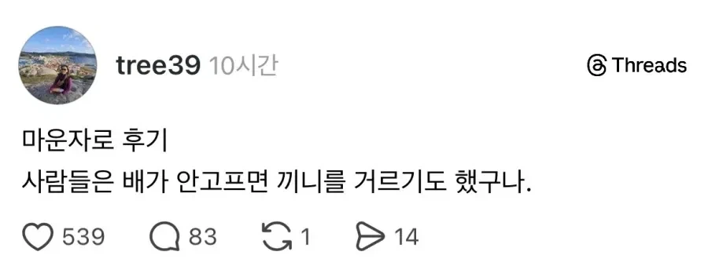

비만환자들이 마운자로 맞고 나서 느낀점 한가지 ㅋㅋㅋ
댓글
원래 이래야정상임
ㄹㅇ 센세이션
나도 밥먹기 귀찮다라는 감정을 성인되고 처음 알았음 성장기에는 진짜 무한으로 먹었는데 ㅋㅋㅋㅋㅋ
"밥이란거 5끼 다먹어야만 되는게 아니었구나"
나 걍 존나 궁금한게 나 태생이 마름이로 태어나서 운동으로 벌크업 ㅈㄴ했었다 나이먹고 운동 안해서 그냥 적당히 멸치 회귀 상태거든 178 72-74 30후
근디 나는 벌크 할 때도 어거지로 먹었고 먹는게 고통임
지금은 하루 한끼 정도 먹음 보통..
식욕이라는게 잘 안생기는데 다른 체중이 좀 더 나가는 사람들은 걍 계속 배가고픔? 혹시 걍 그걸 참기는 어려움? 잘 몰라서 물어보는거임
마운자로랑 위고비는 대사질환치료제임을 납득하고있음 공격아님 ㄹㅇ궁금임
불쌍해애.. 먹는것도 삶의 낙인데..
그건 잘 즐기고 있음; 맛있는걸 먹는거랑 허기에 먹는게 좀 다른 개념임 나한텐..
단순 허기가 아니라 맛있는걸 못참는거임. 고기 몇근씩 먹는애들 닭가슴살 200g 브로콜리 현미밥 먹으면 배불러함
아 이해했어! 고마워 뭔가 납득가네
배가 안고파도 맛있는거 먹을 생각하면 먹고싶어지는거라더라 배가 불러서 터질거 같은데도 피자 치킨 족발 탕수육 있으면 한입이라도 먹는다고 함
그런거구나.. 너무 신기하다 나는
난 살 안찌는 체질이긴한데 걍 아 이것도 땡기고 저것도 땡기는데 둘 다 먹을 수 있을 것 같은데? 하고 걍 먹다보면 다 먹게 됨. 20대 초까지 그래도 꾸준히 운동했어서인지 아직까진 신진대사가 다 무너지진 않았는데 30넘으니까 슬슬 살이 찌기 시작하더라ㅋㅋㅋ
참기가 어려운데 이걸 뭐라 설명해야될지 모르겠네
그냥 아픈거 참는거랑은 다름.. '먹어도 괜찮을것 같은데?'라는 생각이 들게 뇌가 조종당하는 느낌
솔직히 참아라고 하면 참을 수 있음
근데 참다보면 씨발 그냥 몇천원 쓰면 이 고통이 사라지는데 왜 참아야해? 라면서 라면 두어개 끓여먹고 배 빵빵해지면서
고통이 사라짐+포만감 때문에 기분 좋아짐
더이상 뇌가 속삭이지 않아
나는 밥먹는것도 귀찮고 배부른 느낌도 싫어서 비만까지 가는거 이해못했는데
마운자로 나오고 이런 후기들 보면서 비만인들 이해하게 돼서 좋음
난 여전히 비만인들의 구차한 변명 이해안감
배고파서 먹고
때되니까 먹고
심심하니 먹고
그땐 그랬지
근데 진짜 위고비할때 신기하긴했음
식욕이 없다? 먹고싶은게 생각이 안난다?
말이안됨.
난 단백질만 넣어줘도 배고픈거 사라지더라